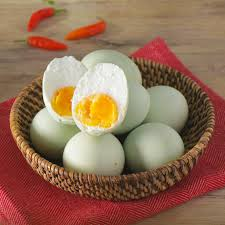
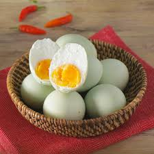

HALO SOBAT COGUIDE!
Sobat sekalian tau ga sih banyak makanan nusantara yang sudah go internasional loh, diantaranya ada :
- 1.Rujak buah
- 2.Indomie
- 3.Telur asin
Rujak buah adalah makanan khas Indonesia yang terbuat dari buah-buahan segar yang disiram bumbu pedas manis. Rujak buah memiliki banyak manfaat bagi kesehatan, seperti melancarkan pencernaan, menjaga kesehatan kulit, dan menurunkan kadar kolesterol.
Indomie adalah merek mi instan yang diproduksi oleh PT Indofood CBP Sukses Makmur Tbk. Indomie merupakan salah satu merek mi instan terawal di Indonesia dan salah satu produsen mi instan terbesar di dunia.
Telur asin adalah istilah umum untuk masakan berbahan dasar telur yang diawetkan dengan cara diasinkan (diberikan garam berlebih untuk menonaktifkan enzim perombak). Kebanyakan telur yang diasinkan adalah telur itik, meski tidak menutup kemungkinan untuk telur-telur yang lain.
Nah makanan diatas itu makanan nusantara yang sudah go internasional dan mudah dibuatnya loh..
Untuk sobat CoGuide yang ingin melihat resep-resep lainnya yang lebih lengkap sobat CoGuide bisa Login ataupun register terlebih dahulu yaa!!

 
